Application Database Schema
Current edge and broker responsibilities
Source review: 6 November 2026, canonical Smart Factory commit 52b4e4207cb7ceb27f419a3548887e63094d83af. The current Raspberry Pi gateway guide specifies local Mosquitto on the Pi and production Mosquitto in a separate Oracle VM container. Older backend diagrams and staging runbooks contain superseded broker-provider references; the current edge guide and source-specific configuration take precedence. This documentation review is not a new inspection of the VM or physical commissioning.
| Component | Responsibility and limits |
|---|---|
| Node-RED (optional) | Protocol/vendor adapters and transformations. Per-source commissioning and publish-only local broker ACLs; no cloud credentials or actuator authority. Existing native Python drivers remain available. |
| Python identity and validation | Check allowed source/topic, schema, types, units and timestamps. Stamp gateway provenance; reject spoofed integration claims and preserve unverified/bad quality until approved. |
| Python durable delivery | Persist accepted observations in SQLite before acknowledging eligible local messages; retry across restarts/outages with original timestamps. Remove upstream QoS 1/2 entries only after the corresponding broker handshake. This is not an end-to-end exactly-once guarantee. |
| Python command policy | Enforce authorized, commissioned targets and command expiry/replay protection. Safety interlocks and manual override stay at the machine. An acknowledgement is not physical feedback. |
| Python cybersecurity | Optional read-only SecurityCollector with an independent durable HTTPS path for identity, configuration, transport and certificate evidence. Disabled until its namespace/token is commissioned. |
| Python AI | Read-only AI advisory capability is in active development. Development status does not establish enabled production inference; any AI component remains subject to source authorization and command policy. |
| Oracle Mosquitto and worker | TLS, dedicated credentials and scoped topics. The .NET worker independently persists/validates telemetry and retries application-API delivery. Redis is transient fan-out, not the durable telemetry record. |
Direct MQTT devices need separate credentials, network reachability and device ACLs. The current Pi-only broker policy does not enable them. Node-RED and Python do not replace safety-rated controller functions. See Node-RED commissioning and Python security/AI scope.
The dashboard uses PostgreSQL with Drizzle ORM. The source of truth is drizzle/schema.ts; checked-in SQL migrations live in drizzle/.

Incident response and downtime records

Threshold-generated incidents use stable SF-* platform classifications. A vendor diagnostic code is stored as supplied when available. The engineer role provides technician assignment and resolution permissions; downtime is explicitly confirmed by the assigned engineer or administrator. A lost device connection does not automatically prove a factory outage. Existing records inferred by migration 0010 need operational review before use in downtime KPIs. Mean downtime-to-resolution uses only records with both downtime and resolution timestamps.
| Table | Purpose |
|---|---|
| users | Local identity, bcrypt password hash in password, role, and sign-in timestamps. Never expose the hash in API responses. |
| account_requests | Pending registration or password-help requests, safe applicant details, review status, reviewer and time. Registration hashes are erased after approval or dismissal. |
| system_settings | Durable application-wide settings changed by administrators. demo_data_enabled controls whether demo rows are included; replicas refresh it without requiring a deployment. |
| devices | Connectivity devices. Registrations support gateways, edge devices, sensors, actuators and controllers. Includes status, location, firmware, and simulator marker. Migration 0015_melted_dragon_lord adds edge_device. |
| assets | Equipment identity, manufacturer name/designation, separate required postal fields, article and order codes, optional serial/rated values, lifecycle, current AAS JSON, monotonic AAS revision, and simulator marker. |
| asset_devices | Asset-to-gateway protocol, endpoint, and tag/register mappings. Store credentials on the edge gateway, not in mappings. |
| asset_lifecycle_events | Actor, transition, timestamp, and engineering note audit history. |
| asset_versions | Append-only AAS snapshots keyed by asset and revision, with change note, actor, and SHA-256 integrity digest. Migration baseline rows have no digest because prior revisions were not recorded. |
| login_rate_limits | Hashed IP/email identifiers, fixed-window counters, and expiration timestamps shared across application replicas. |
| sensor_readings | Nullable measurements, AAS asset attribution, named signals, Unix epoch millisecond timestamps, and a unique ingestion digest for retry deduplication. Indexes cover asset/date and device/date queries. |
| alerts | Stable platform/vendor error code, severity/status, metric observation, acknowledging actor/time, assigned engineer/time, confirmed downtime start, resolving actor/time, and lifecycle timestamps. Per-source transaction locks deduplicate threshold incidents by device/asset/metric; query indexes cover status/date and assignee/status. |
| alert_thresholds | Enabled per-device warning and critical bands used to classify telemetry into incidents. |
| firmware_versions, ota_deployments | Firmware catalog metadata and legacy rollout rows. OTA is disabled; a rollout row is not proof that a device downloaded, verified, installed, or booted a release. |
Connection and lifecycle ids are application-level relationships, not database-enforced foreign keys in the current schema. Oracle-hosted BaSyx owns separate storage in the Aiven basyx PostgreSQL database; it is not part of the Drizzle application schema. Demo rows are marked isDemo; startup and viewing never seed. An explicit local CLI creates isolated showcase fixtures. Administrators control visibility separately; shared identities see only approved demo records.
Review migration SQL before applying changes. Set DATABASE_URL to the intended database before running pnpm db:migrate. pnpm e2e uses its own disposable PostgreSQL container.
Durable incident notifications
Migration 0013_incident_notifications adds notification_inbox and an alert trigger. In the alert transaction, new warning/critical incidents and critical escalations notify current engineers/admins; assignment changes notify new/previous assignees and admins; resolution notifies the assigned technician/admins. Migration 0016_vengeful_victor_mancha makes the alert link nullable so the same durable queue can carry account-created welcome mail without inventing an incident. The trigger does not backfill historical incidents or emit duplicate messages on unrelated incident updates.
Each row belongs to one account, optionally links to an alert, and retains title/body, read time, email status, attempts, next attempt time, safe error summary and provider acceptance time. Foreign-key cascades remove rows when their account or associated alert is deleted. The delivery worker atomically claims due rows using a two-minute lease and retries after a crash. accepted means the provider accepted the request, not that the email reached a mailbox. Eight failed attempts become failed; an authorized owner may retry an incident message after correcting configuration. unconfigured and no_recipient remain visible for incident messages; account welcome rows are email-only and do not appear in the incident inbox.
The inbox is queryable only by its owner. Reads do not acknowledge/resolve the factory incident. Email-provider credentials, sender identity and recipient policy are runtime secrets/configuration, not editable browser notification settings. Plan retention/archive policies for both telemetry and inbox history before long-term production operation.
Migration 0014_account_email_identity adds a case-insensitive unique email index. Null emails remain allowed for legacy identity records. Existing duplicate case-folded email addresses must be reconciled by an administrator before migration. Migration 0033_account_requests adds a pending review queue; registration creates no user or session until an individual administrator verifies the applicant and approves a selected role. The review and assigned role are recorded in the audit trail. Migration 0034_password_reset_tokens adds single-use recovery records tied to the account access version and email address. Only a SHA-256 token hash is stored in clear; a separate AES-GCM payload lets the existing mail worker deliver the link without exposing it through notification inbox APIs. Delivery clears that payload, while expiry, consumption and account changes prevent later redemption. Passwords and raw reset tokens are never included in account API responses. Administrator-assisted recovery remains available after identity verification.
Trusted observation and access additions
Migrations 0024–0028 add disabled/recovery/session-generation state, hashed session revocations, immutable selected-field passport publications, engineering conversion metadata, reviewed threshold units, bounded ingestion quarantine with continuing counters, incident snapshots and append-only review history, acquired/received gateway observations, and a singleton authenticated worker-status receipt. Acquisition time, receipt time, current eligibility and evidence mode are separate fields.
Scopes precede sample selection and aggregation. Source values, units, conversion version and quality remain inspectable. Unitless thresholds require review. Passport publication is explicit and revocable. Runtime checks compare migration hashes with the applied ledger.
Factory layouts and FX/TSN diagnostics
Migration 0031_factory_layouts adds factory_layouts: UUID identity, owning user (with delete cascade), live/configured scope, name, JSON document, positive version, archive time and creation/update timestamps. The owner/scope/update index supports bounded layout listing. Saves check the expected version to reject stale updates. Geometry is visualization state, separate from asset identity, physical commissioning and telemetry history. Shared demo layout drafts and editable sandbox changes stay browser-local; they are not rows in this table. See factory layouts and editable demo.
FX/TSN reports use the existing system_settings JSON storage under a hashed network-diagnostics: gateway key; there is no separate diagnostics migration or high-rate packet-history table. The stored envelope contains the validated report, import time and actor. Each registered operational gateway retains one newest report, and an older replacement is rejected. Responses are bounded to 128 gateways and report coverage and staleness explicitly. Demo scenarios are synthetic examples, separate from operational reports. See the diagnostics store and FX/TSN report contract.
Named factories and retained activity
Migration 0032_named_factories adds shared factories, canonical membership/placements in factory_items, and factory_activity. Each member references exactly one existing asset or device; native equipment uses its backing asset. Membership has unique record identity and a per-factory, case-insensitive tag. Physical dimensions, position and rotation are validated before saving. Optimistic factory versions protect concurrent team edits.
Factory, membership and canonical inventory triggers record safe before/after values with a transaction-local authenticated actor. Connection changes omit endpoint/mapping values; related thresholds, incident state, model revisions/scenarios, OTA metadata and passport publication events use explicit safe projections. Ordinary UPDATE/DELETE against retained activity is rejected; no application edit/delete endpoint or automatic purge exists. Canonical inventory deletion cascades its placement while retaining factory history. Operational rows are not backfilled or renamed. Existing personal layout tables remain separate. Roles and workflow.
